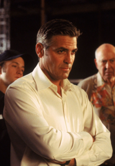

Home
About Me
Future
Danny Ocean
Danny Ocean
At 22 years old, the Las Vegas gambling lifestyle had a major influence on Danny. He met Reuben Tishkoff who improved his gaming abilities. Some time later, he married Tess Ocean, who after finding out he is a deceptive criminal separated with him. The conflict between the two caused him to ruin himself.
While having been implicated in at least thirteen confidence schemes and frauds, he was charged and convicted for one about four years prior to the Benedict Job. He became eligible for parole at some point during his sentence which was for more than four years. Managing to convince a parole review board he had been rehabilitated, he was granted parole. While in prison, he was divorced from Tess. He found out about the divorce on the final day of his sentence, when he received the divorce papers along with the rest of his belongings he had on his person entering incarceration.

Danny was recommended Terry Benedict as a possible target for a job by Denny Shields. Very soon after Danny's release from prison, he headed to Atlantic City, NJ to recruit Frank Catton for the job, and to uncover the whereabouts of Rusty Ryan. Frank told Danny what he had heard last about Rusty's activities and also agreed to join Danny for the job. To ensure his travel plans weren't jeopardized, Danny checked in with his parole officer, whom he convinced that he had intended to abide by his parole agreement.
In violation of his parole, Danny headed to Los Angeles. Danny surprised Rusty at his poker lesson, where he was training a small group of celebrities. When one of the celebrities, Topher Grace, asked Danny about his occupation, he responded that he had recently been released from prison. With the attention then on the crime for which Danny was convicted, Rusty suggested that the reason Danny failed the theft was for lack of a reliable buyer after stealing the goods. Disregarding Rusty, Danny asserted that his method seemed reliable. Even as the two calmly disputed Danny's failed theft, they were taking advantage of the novice celebrity gamblers. As Danny began to bet in high amounts, Rusty talked the novices into calling his bets and eventually losing to Danny's play.
Once the candidates are gathered, he gives them a short warning about the job and a choice to be involved. After they all accept, Danny and Rusty give a brief presentation of the plan. After tasking each member of the crew, he and Rusty oversee that each member's role is accordingly executed. Linus Caldwell finds Tess during his own task and, after bringing Rusty's attention to her, he causes Danny to reveal the major intent for the Benedict Job. After convincing Rusty to stay on the job, Danny explains his intent for Tess to the rest of the crew except for Linus. With Saul Bloom keeping Benedict occupied, Danny surprises Tess in a dining hall at one Benedict's hotels and after an attempt at light conversation, he tells her he wants her back. Benedict interrupts their conversation causing Danny to leave. On the eve of the heist, Basher Tarr informs the group about his jeopardized task, Danny hints at an alternative method, but is quickly shut down by Rusty. After Basher redeems his own role, Danny and a few members of the crew drive to the California Institute of Advanced Science in order to steal a pinch. During the pinch heist, Yen is injured causing Danny to reprimand Linus for risking the crew's welfare. With tensions still high from Yen's injury.
Danny and Linus return to the hotel suite the crew booked. As a ploy to get Linus to take charge, a few of the crew pretend to cut Danny from the job. On the night of the heist, Danny lets himself be spotted by Benedict in order to gain attention and then be detained, so becoming, after again visiting Tess to bid her farewell and plant a cell phone on her. With the help of accomplice Bruiser, Danny temporarily escapes detention to meet Linus in the Bellagio cages' elevator shaft to the vault. Once the city's power is blown, he and Linus descend down the shaft, take out the two vault guards, and break into the vault.
Leaving the infiltrating members of the crew behind, Danny returns to the detention room, where Bruiser is solo pretending to rough him up. Benedict arrives and inquires about Danny's involvement in the robbery having just took place. After Danny denies any knowledge of the robbery, Benedict releases Danny, who offers him assistance in finding the culprits, but only as a trade for Tess. While Tess is secretly watching from the hotel suite, Benedict agrees to Danny's offer, giving her cause to split from Benedict. After hearing the details of Danny's offer, Benedict changes his mind and then releases Danny, who has been in violation of his parole ever since leaving New Jersey, into the custody of the local police. Just as Danny is about to be driven away, Tess runs to him to inquire about their future.
A few months after the Benedict Job, Danny is released from prison. He meets Rusty and Tess in the prison's parking lot and rides off with them being tailed by Benedict's goons. Under the alias Miguel Diaz, Danny moves with Tess to a large house in a neighborhood of East Haven, CT where the two can enjoy their earnings together and escape the thieving world's pressures, for which they employ a code for communication when in danger. In East Haven, he had trouble coping with common ethical standards and easily became distracted with opportunities for various criminal activities.